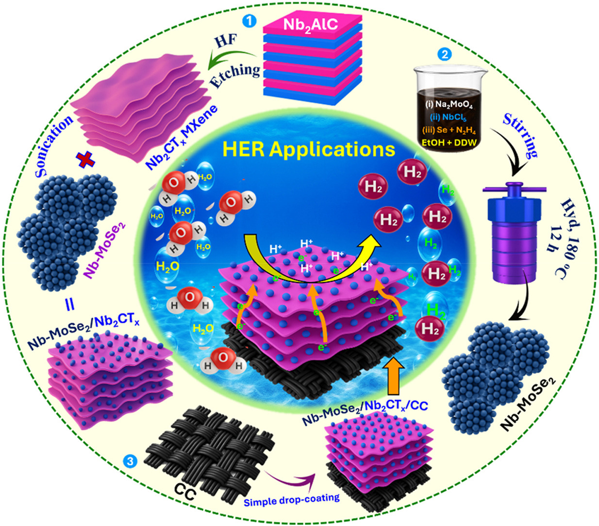
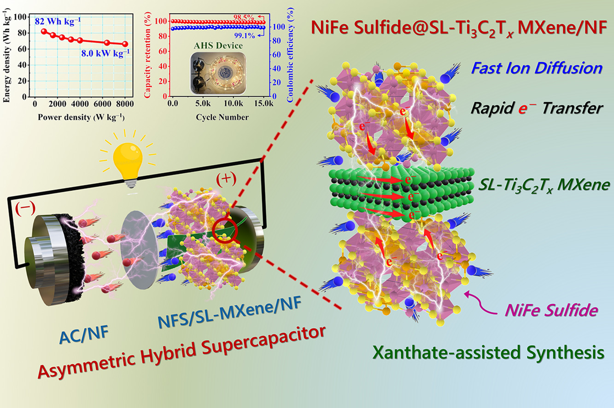

Project
MXene-Based Composites for Water Splitting & Supercapacitors
Overview
MXenes — two-dimensional transition-metal carbides and nitrides such as Ti3C2Tx and Nb2CTx — combine metallic conductivity, a large accessible surface area, and tunable surface chemistry, making them outstanding scaffolds for energy materials. This project pairs MXenes with redox-active phases to build composite electrodes for two complementary clean-energy applications: electrochemical water splitting (hydrogen production) and high-performance supercapacitors (energy storage). In both, the MXene provides a conductive, anti-aggregation support that unlocks the full potential of the active material.
Why MXene Composites?
- High conductivity — the metallic MXene network moves electrons rapidly to and from active sites.
- Conductive scaffold — MXene sheets disperse the active phase and prevent nanoparticle aggregation, preserving activity.
- Rich interfaces — coupling MXenes with sulfides, selenides, or doped chalcogenides creates synergistic interfaces with extra active sites.
- Versatility — the same design principle boosts both catalytic (HER) and charge-storage (supercapacitor) performance.
System 1 — Water Splitting
Nb-doped MoSe2 / Nb2CTx MXene heterostructure
This work designs an interface-coupled heterostructure in which niobium-doped molybdenum diselenide (Nb-MoSe2) is anchored on Nb2CTx MXene to accelerate the hydrogen evolution reaction (HER). The Nb-MoSe2 was grown by a hydrothermal route, while the Nb2CTx MXene was produced by selectively acid-etching the Nb2AlC MAX phase; the two were then coupled through a simple ultrasonication step.
Niobium doping reshapes the electronic environment of MoSe2 and increases the density of catalytically active sites, while the conductive Nb2CTx scaffold prevents particle agglomeration and speeds charge transfer. In acidic media, the optimized Nb-MoSe2/Nb2CTx delivered strong HER performance:
- Overpotential of ~287 mV at 10 mA cm−2 (and ~405 mV at 50 mA cm−2).
- Tafel slope of ~122 mV dec−1, indicating favorable reaction kinetics.
- Stable operation over ~48 h on a carbon-cloth substrate.

System 2 — Supercapacitors
Ni-Fe sulfide @ Ti3C2Tx MXene hybrid electrode
This work builds a binder-free, hierarchical 2D/3D hybrid electrode by growing three-dimensional bimetallic nickel–iron sulfide (NFS) directly on two-dimensional single-layer Ti3C2Tx MXene nanosheets via an ethyl-xanthate-driven in situ solvothermal synthesis. The 2D MXene sheets act as conductive, high-surface-area substrates, while the 3D NFS nanostructures interconnect the sheets and expose abundant redox-active sites, enabling fast electron and ion transport.
The resulting NFS@MXene electrode achieved excellent charge-storage performance:
- Specific capacity of ~1693 C g−1 (~4233 F g−1) at 1 A g−1.
- Strong rate capability (~80% retention at 15 A g−1) and cycling stability (~98.5% after 15,000 cycles).
- An assembled asymmetric device (NFS@MXene//AC) reached ~82 Wh kg−1 energy density at ~8.0 kW kg−1 power density, with ~98.8% retention after 15,000 cycles.
The high performance is attributed to a synergistic charge-storage mechanism involving reversible, multivalent redox transitions of the Ni, Fe, and Ti centers, enabled by the conductive MXene network.

Approach & Methods
- MXene synthesis — selective acid etching of MAX phases (e.g., Nb2AlC) to produce 2D MXene sheets.
- Composite assembly — hydrothermal, solvothermal, and in situ growth to couple the active phase with the MXene support.
- Characterization — XRD, XPS, FE-SEM, and TEM to confirm composition, structure, and interface formation.
- Electrochemical testing — HER performance (overpotential, Tafel slope, stability) and supercapacitor performance (specific capacity, rate capability, cycling, full-device energy/power density).
Key Takeaways
- Coupling active phases with conductive MXenes enhances both electrocatalysis and energy storage.
- Doping and interface engineering create additional active sites and faster charge transfer.
- The same 2D-support design strategy transfers across very different applications — from hydrogen production to supercapacitor electrodes.
Related Publications
- Rational design of interface-coupled Nb-doped MoSe2/Nb2CTx MXene heterostructures with enriched active sites toward enhanced hydrogen evolution reaction Journal of Power Sources View paper
- Ethyl xanthate-driven in situ synthesis of Ni-Fe sulfide@Ti3C2Tx MXene hybrid electrodes for ultra-high-performance supercapacitors Chemical Engineering Journal View paper